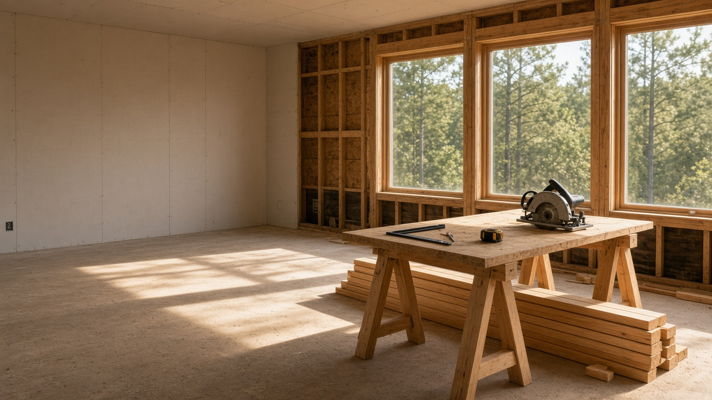
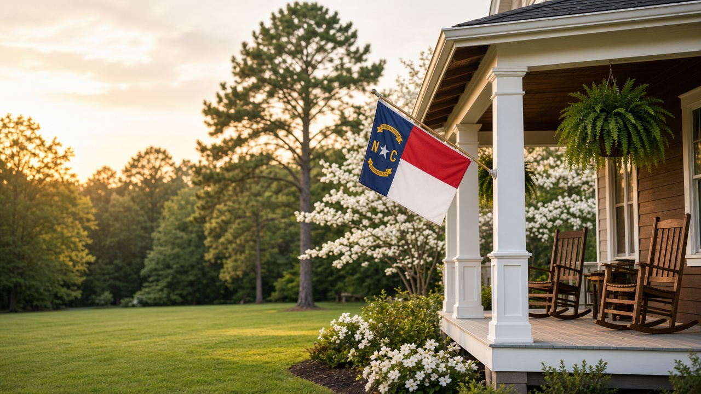

About the company.
A veteran-owned North Carolina company serving homeowners in Cumberland County and surrounding communities. Here’s who we are, how we work, and what you can expect when you call.

Who we are
Veteran-owned and rooted in this community.
North Carolina Building and Remodeling LLC is a North Carolina-based, veteran-owned company founded by James White, a U.S. Navy combat veteran. We serve Cumberland County and surrounding communities with remodeling, roofing, home repairs, painting, and exterior cleaning.
Our team brings more than 50 years of combined experience in the trades. This is our hometown, and knowing the area and the homes here gives us an advantage on every job. The values of family, commitment, integrity, and dedication served us throughout our military careers, and they still shape the way we do business.
A good project starts with communication, collaboration, and understanding your vision. We’re easy to reach, and we keep every job transparent and clear, so you always know what’s happening and what comes next. We pay attention to our reviews because they tell us whether we understood what you wanted.
When you hire us, it’s for the whole job. You don’t have to be the project manager. You let us complete the work, and that means less for you to worry about.
James White Founder
How we work
Three things we hold to.
-
Straightforward communication
Plain answers about scope, timing and cost, including when something changes. We’re easy to reach, and you’ll always know where the job stands.
-
Quality work
It starts with understanding what you want. Getting the details right matters more than getting done fast. The work should hold up long after we leave.
-
An easier process
Clear steps from the first request to the final walkthrough, with a simple breakdown of the scope up front and detailed tracking of the job as it moves.
Recognition
Nextdoor Neighborhood Favorite 2025
Recognized by neighbors on Nextdoor in 2025. See us on Nextdoor

Next step
Ready to talk about your project?
Send the details and a few photos. We’ll follow up to talk through next steps.